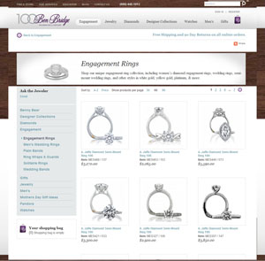
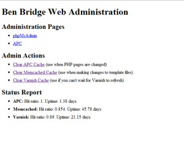

- 
- 
When Ben Bridge Jeweler noticed a sluggish experience on their website, I was tasked to improve load-times and allow the website to scale up and down easily with the seasons.
Ben Bridge Jeweler is a national jeweler in the U.S. which recently celebrated it's 100th anniversary. I worked on this project while at GLG.
Highlights
- 4 times faster. The load time for the landing page was 4 times faster. This was hard-earned through new caching systems, fine-tuning the datastores, and even hacking in to the core of Drupal.
- Scale up and down. Restructuring the network topology and code to handle horizontal scaling allowed increasing capacity to be as easy as cloning a virtual machine and adding it to the load-balancing pool.
- Easy monitoring and admin. A PHP monitoring page allows future developers to monitor cache performance and administer easy cache flushes when needed.
Technologies Used
- Varnish and Pound servers as a reverse proxies for multiple Apache servers
- Memcached and fine-tuned MySQL for temporary and permanant data storage.
- PHP optimized with APC
- Drupal (actually, Pressflow 6) and X-Cart in the backend